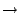

The context-free syntax describes the concrete and abstract syntactic structure of sentences in a language. A context-free syntax contains a set of declarations for context-free functions, each consisting of zero or more symbols followed by `' and a result symbol. They may be followed by attributes that control how parentheses and brackets affect the abstract syntax, by attributes that define the associativity of a rule, or by attributes[ (Section )]Attributes which influence the rewriting process. All functions with the same result sort together define the alternatives for that symbol.
Elements of the left-hand side of a context-free function are separated by an invisible non-terminal LAYOUT? (optional LAYOUT) in order to permit layout between these members. This optional layout non-terminal is automatically inserted.